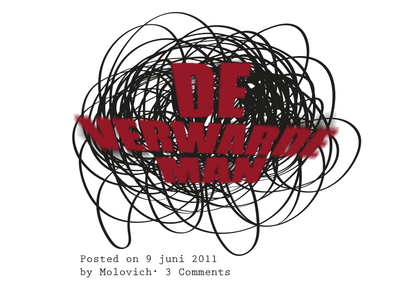
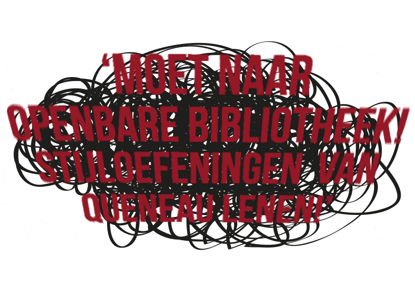

De politie heeft dinsdag 2 februari een verwarde man aangehouden. Hij was op dat moment in een babywinkel op het Bos en Lommerplein bezig babyschoentjes te kopen. Een luttele drie uur daarvoor stapte de verwarde man op het stationsplein uit de bus. Hij duwde een kinderwagen voort waarin 99 blikjes Whiskas lagen. Hij liep het plein diagonaal over en leek zich niet aan de miezerregen, ook niet aan de striemende wind en al helemaal niet aan zijn voortploeterende medemens te storen. Diverse ooggetuigen bevestigen dat de verwarde man aan één stuk door een tekst schreeuwde die wij als volgt hebben weten te reconstrueren:

Bij het Oosterdokseiland lag er over de weg een plank met aan weerszijden diepe bouwputten. Vanuit de diepte klonken de geluiden van heipalen en drilboren, geluiden waarboven de verwarde man een langgerekt wolvengehuil liet horen.
Boven, op de tweede verdieping, begon de verwarde man alle boeken van schrijvers met een Q uit de boekenkast op de grond te gooien. Hij bleek met name geïnteresseerd in de boeken van de Franse schrijver Raymond Queneau. Een aantal bibliotheekbezoekers besloot de security te waarschuwen, maar die zagen geen reden in te grijpen. Onder het braken van het woord
 begaf de verwarde man zich naar de dichtstbijzijnde computer en tikte ‘stijloefeningen, Raymond Queneau’ in het zoekveld van de zoekmachine. Volgens de resultaten van de zoekmachine lag Stijloefeningen van Raymond Queneau gewoon op de plank. De verwarde man liep daarop naar een argeloze medewerker die hij over de balie heen sleurde en op zeer intimideren toon opdroeg mee te helpen zoeken.
Bij de Q aangekomen troffen de verwarde man en de medewerker een wirwar van op de grond geworpen boeken aan. Ook de medewerker kon niet voldoen aan de onbegrijpelijke eisen van de verwarde man en verkeerde, zo verklaarde hij later aan uw verslaggever, in doodsangst. Desondanks lukte het hem om de verwarde man te overtuigen een mail te sturen naar het magazijn, die zijn vraag wellicht wel konden beantwoorden. Zo hoopte hij enige tijdswinst te boeken, verklaarde de medewerker later. De verwarde man stuurde een mail. In de tijd die hij moest wachten is de verwarde man, krijsend als een
, van tafel naar tafel gesprongen. Toen hij vijftien minuten later zijn mail checkte en las dat Stijloefeningen op de plek lag waar het moest liggen, ontdeed hij zich van zijn kleren en verliet hij luid brullend het pand, slechts gekleed in een enkele sok.
begaf de verwarde man zich naar de dichtstbijzijnde computer en tikte ‘stijloefeningen, Raymond Queneau’ in het zoekveld van de zoekmachine. Volgens de resultaten van de zoekmachine lag Stijloefeningen van Raymond Queneau gewoon op de plank. De verwarde man liep daarop naar een argeloze medewerker die hij over de balie heen sleurde en op zeer intimideren toon opdroeg mee te helpen zoeken.
Bij de Q aangekomen troffen de verwarde man en de medewerker een wirwar van op de grond geworpen boeken aan. Ook de medewerker kon niet voldoen aan de onbegrijpelijke eisen van de verwarde man en verkeerde, zo verklaarde hij later aan uw verslaggever, in doodsangst. Desondanks lukte het hem om de verwarde man te overtuigen een mail te sturen naar het magazijn, die zijn vraag wellicht wel konden beantwoorden. Zo hoopte hij enige tijdswinst te boeken, verklaarde de medewerker later. De verwarde man stuurde een mail. In de tijd die hij moest wachten is de verwarde man, krijsend als een
, van tafel naar tafel gesprongen. Toen hij vijftien minuten later zijn mail checkte en las dat Stijloefeningen op de plek lag waar het moest liggen, ontdeed hij zich van zijn kleren en verliet hij luid brullend het pand, slechts gekleed in een enkele sok.
Lees ook
Zombie
Duizenden hongerige ondoden lopen zielloos over het stationsplein. Op zoek naar voedsel, naar half vergane hondenlijken...
Gepupliceerd op 21 juni 2011
Toneel
Scene 1: Op het toneel staat een paal met bovenop een rond bord waarop we BUSSTOP lezen...
Gepupliceerd op 14 april 2011
Ongeboren
Jij bevindt je een paar kilometer verderop in de buik van je moeder. Ik heb je gisteren gezien. Ik zag je armpjes, je beentjes, je naar...
Gepupliceerd op 29 maart
Ongeluk
Voor het Centraal Station stap ik lijn 13 uit midden in een plas die zo diep is dat mijn hele schoen erin verdwijnt. Mijn zoontje, waarvan ik...
Gepupliceerd op 17 februari 2011
>